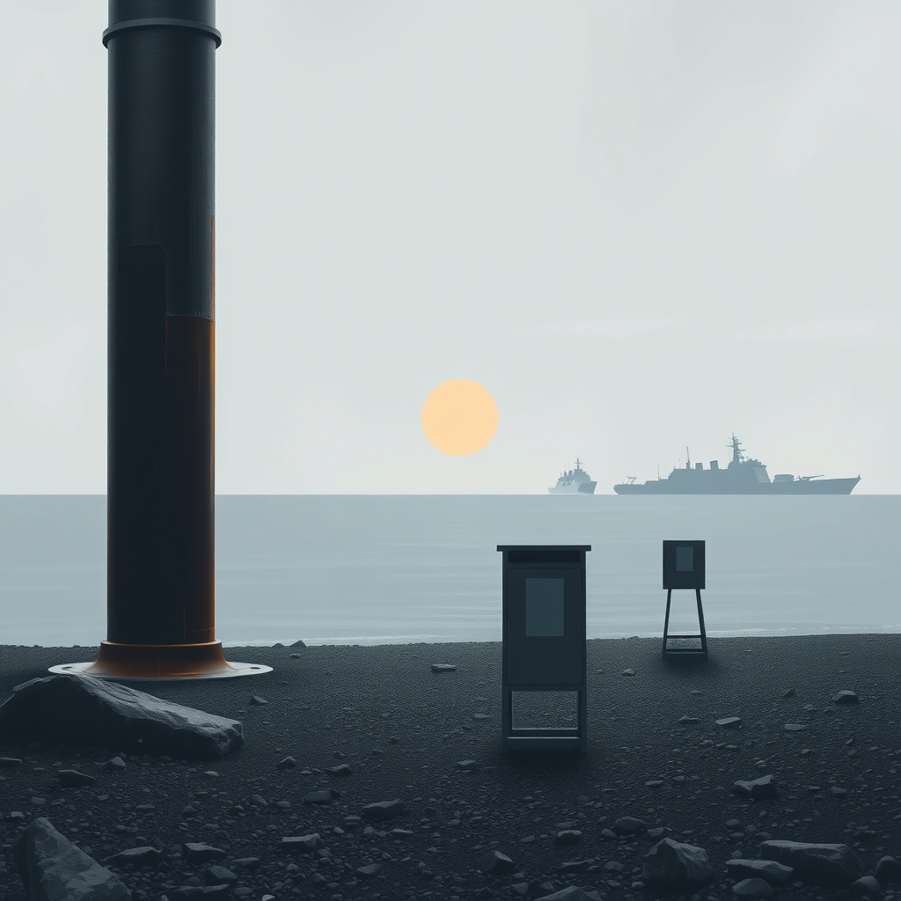
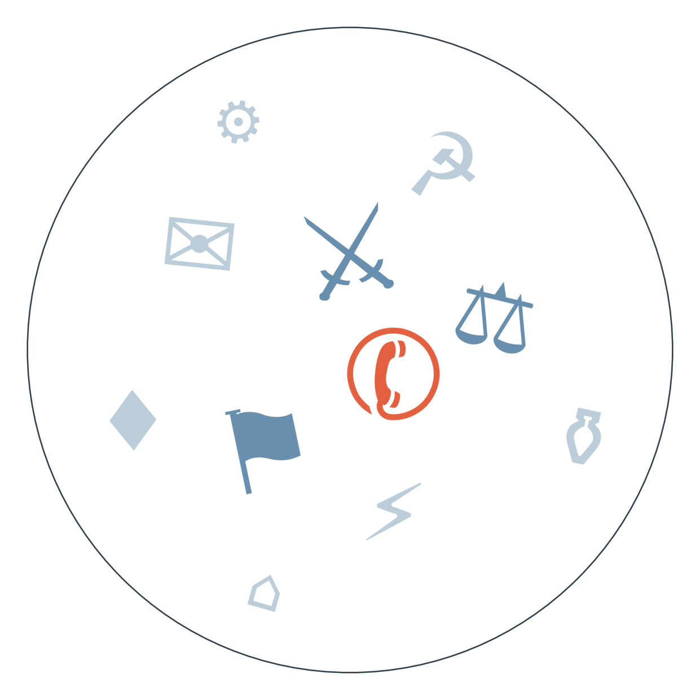

Ранковий бріф · огляд світової преси

Ескалація довкола Ормузької протоки не вщухає: сьогодні Корпус вартових ісламської революції атакував танкер під прапором Того за спробу «незаконного проходу», а Вашингтон тим часом схвалив продаж 48 винищувачів F-35 Саудівській Аравії на 24,3 мільярда доларів. Це одна з найбільших разових угод по F-35 за останні роки, і вона одразу підважує повітряну перевагу Ізраїлю в регіоні (тривалість: ескалація навколо Ормузу і Баб-ель-Мандебу, третій тиждень).
А тим часом виявляється, що Пентагон розглядає вивід 25 тисяч американських військових з Європи — про це повідомляє NBC з посиланням на джерела, і поки що новину підхопили лише російські ділові видання. Дивна деталь: того ж дня Трамп хвалиться «значним прогресом» у переговорах про нову постійну базу армії США в Польщі — Вашингтон ніби йде з континенту і закріплюється на ньому одночасно.
У Росії стартували три дні голосування до Держдуми — перші дільниці відкрилися на Далекому Сході ще вранці, антивоєнні партії до бюлетеня не потрапили. Десятки нових депутатів, за прогнозами, будуть військовими з бойовим досвідом в Україні — Кремль явно хоче формалізувати «воєнну еліту» саме через ці вибори.
Місія ООН з розслідування ситуації в Ірані заявила, що має «розумні підстави» вважати, що США скоїли воєнні злочини під час удару по школі в Мінабі, і водночас звинуватила сам Тегеран у злочинах проти людяності за придушення протестів. Білий дім уже відкинув звіт, а арабська й західна преса читають цей самий документ вибірково — детальніше у СЛІПІЙ ЗОНІ.

Продаж 48 F-35 Саудівській Аравії за 24,3 мільярда доларів.
Замовчують: жодне з видань не наводить власне пояснення Саудівської Аравії, навіщо їй саме зараз потрібні 48 F-35 — лише контекст ескалації довкола Ормузу.
Чому розходяться: ізраїльська преса дивиться на угоду крізь призму десятиліттями закріпленої «якісної військової переваги» (QME), яку Вашингтон офіційно гарантує Тель-Авіву, і будь-яке її розмивання — екзистенційне питання; американська ділова преса оцінює угоду як частину торгівлі зброєю і внутрішньополітичну проблему для Трампа в Конгресі; турецька преса, що конкурує з Ізраїлем за вплив у регіоні, зацікавлена показати зближення Вашингтона з арабським світом як нормальний, майже нейтральний процес, не вимагаючи жодних застережень.
9 вересня — США та Іран провели прямий обмін ударами → цього тижня — ескалація довкола Ормузу і Баб-ель-Мандебу продовжилась, саудівський трубопровід Схід-Захід тимчасово зупинявся → 18 вересня — КСІР атакував танкер під прапором Того в Ормузькій протоці, США схвалили продаж 48 F-35 Саудівській Аравії → до чого веде: закріплення нового витка регіональної гонки озброєнь і ризик прямого зіткнення флотів у протоці.
15 вересня — Трамп анонсував «енергоперемир'я» між Росією й Україною, Кремль погодився лише в обмін на скасування санкцій → цього тижня — Конгрес ухвалив голосами 262-159 наймасштабніший за два роки пакет санкцій, він чекає підпису Трампа → 18 вересня — у Росії стартували три дні виборів до Держдуми без жодних ознак готовності до поступок → до чого веде: підписання закону про санкції може остаточно зірвати вже крихке перемир'я (наш прогноз: 65% ймовірність порушення до 29 вересня).
раніше — серія інцидентів на кордоні альянсу: збитий дрон над Литвою, сигнальні ракети данського фрегата — загострила тривогу в НАТО → напередодні — Туск попередив про можливі «випадкові» провокації з боку РФ проти країн НАТО → 18 вересня — Польща знову підняла винищувачі через черговий удар РФ по цілях в Україні → до чого веде: ймовірне ухвалення НАТО додаткових заходів безпеки на східному фланзі альянсу.
Франція: прем'єр Лекорню представив бюджет-2027 з економією близько 54 мільярдів євро — урізання соцвиплат, зарплат чиновників і пенсій, опозиція назвала це «потягом аскези» (за Le Figaro).
Нафта: Brent просів до 103 доларів за барель на новинах про часткове відновлення саудівського трубопроводу Схід-Захід — перше послаблення за тиждень зростання (за Gulf News, OilPrice).
Аргентина: ВВП у другому кварталі впав на 0,6 відсотка, безробіття зросло до 7,9 відсотка — максимум із часів пандемії (за Ámbito Financiero).
Японія: за неофіційними даними, Банк Японії готується підняти ставку до найвищого рівня з 1993 року — очікується підвищення до 1,25 відсотка.
Поки Kommersant і RBC детально висвітлюють перший день голосування до Держдуми та можливу появу «воєнної еліти» серед нових депутатів, західна ділова преса обмежується короткими зведеннями без деталей про кандидатів-військових.
Bild і Fakt цього ранку живуть у власному світі — погода на Октоберфест, гороскопи і «серійний вбивця в жіночому одязі» в Бразилії — жодного слова про вибори в Держдумі чи ескалацію в Ормузі.
Санкційний пакет Конгресу США, що чекає підпису Трампа, дає Україні новий важіль тиску на Росію, але Кремль уже дав зрозуміти: погодиться на «енергоперемир'я» лише в обмін на скасування санкцій — тобто угода може виявитися пасткою, а не полегшенням.
Вибух біля будівлі ТЦК на Львівщині, який СБУ розслідує як теракт, підсилює тему внутрішньої диверсійної активності на тлі мобілізаційного напруження (див. ПУЛЬС КРАЇН).
Гібридний тиск на східний фланг НАТО — Польща знову підняла винищувачі через удар РФ по цілях в Україні, і це показує, наскільки тісно війна в Україні вже переплетена з безпекою всього альянсу.
Новина NBC про можливий вивід 25 тисяч військових США з Європи (див. РАДАР) сьогодні лишається практично винятково в російських ділових виданнях — західна преса мовчить, найімовірніше тому, що вона суперечить власній заяві Трампа про нову базу в Польщі того ж дня, а офіційного коментаря Пентагону досі немає.
Частина звіту місії ООН про «злочини проти людяності» з боку Тегерану — незаконні вбивства, тортури і насильницькі зникнення протестувальників — отримує значно менше уваги в арабомовній і про-палестинській пресі, яка зосереджується майже виключно на епізоді з ударом по школі в Мінабі; це вибіркове читання одного й того ж документа, а не брак інформації.
Секретні перемовини США з хуситами в Омані (див. РАДАР) сьогодні так само нічим не підтверджені й не спростовані — тема просто зникла з порядку денного за добу, хоча ескалація довкола Ормузу і Баб-ель-Мандебу тільки посилилась, ймовірно тому, що жодна зі сторін не зацікавлена підтверджувати перемовини на тлі публічної демонстрації сили одна одній.
Середня впевненість. Пентагон готує рекомендації щодо виводу 25 тисяч військових США з Європи, які підуть міністру оборони 6 листопада. На чому ґрунтується: одне джерело NBC News, підхоплене лише російськими діловими виданнями.
Низька впевненість. Секретні перемовини США з хуситами в Омані щодо Червоного моря. На чому ґрунтується: одне джерело — Israel Hayom, не підтверджене жодним іншим виданням за тиждень.
Висока впевненість. Найближчий індикатор подальшої ескалації в Перській затоці — чи повторяться напади на танкери в Ормузькій протоці та чи ухвалить Конгрес США остаточне рішення по угоді з F-35. На чому ґрунтується: збіг одразу кількох незалежних сигналів — атака на танкер під прапором Того, зупинка саудівського трубопроводу, мобілізація перехоплювачів ППО (FT, Israel Hayom, OilPrice, gCaptain).
Наші:
Уряд Франції під керівництвом Лекорню переживе перше голосування щодо бюджету-2027 без вотуму недовіри до 02.10.2026
Конгрес США заблокує або суттєво затримає угоду з продажу F-35 Саудівській Аравії до 02.10.2026
Трамп ухвалить рішення про нову військову ескалацію проти Ірану поза межами вже завданих ударів до 02.10.2026
Кажуть інші:
Дональд Туск (прем'єр-міністр Польщі) — попереджає, що Росія може організовувати «випадкові» провокації проти країн НАТО найближчим часом.
Financial Times (редакція) — очікує, що угода з продажу F-35 Саудівській Аравії наштовхнеться на спротив у Конгресі США; горизонт не вказано.
Метт Сміт (аналітик Kpler, за OilPrice) — прогнозує подальше зростання нафтових цін через поглиблення дефіциту дизельного пального; горизонт не вказано.
19-20 вересня — завершення триденного голосування на виборах до Держдуми РФ і регіональних органів влади. Найближчими днями — у Норвегії спливає термін посередництва у трудовому спорі залізничників, можливий страйк уже в п'ятницю вранці. 20 вересня, орієнтовно, — формування коаліції в Саксонії-Ангальт після серії теледебатів проти АфД.
Базова лінія у прогнозах. Відсоток «базово» — це ймовірність події за інерцією, якщо ніхто нічого не робитиме й нічого не зміниться. Друге число — наша впевненість. Прогноз має сенс лише тоді, коли ці числа розходяться: збіг означає, що ми просто описали поточний стан.
Відсотки в карті уваги. Частка країни в денному обсязі зібраних матеріалів. Не показник важливості події, а показник того, скільки місця країна зайняла в новинному потоці за добу. Різкий стрибок частки зазвичай означає, що в країні щось відбувається.
Стрічки, які не відповіли. Не відповіли: Zerkalo, Euractiv, TVN24, Al Arabiya, El Universal, Milenio.